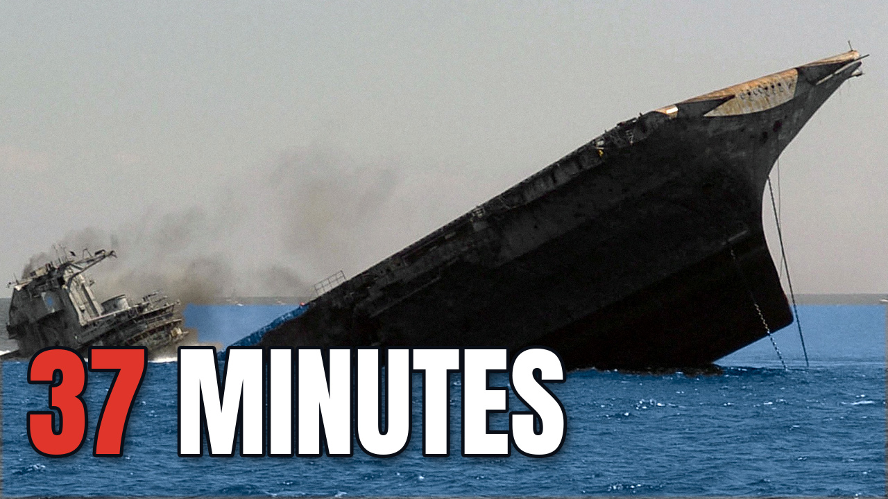
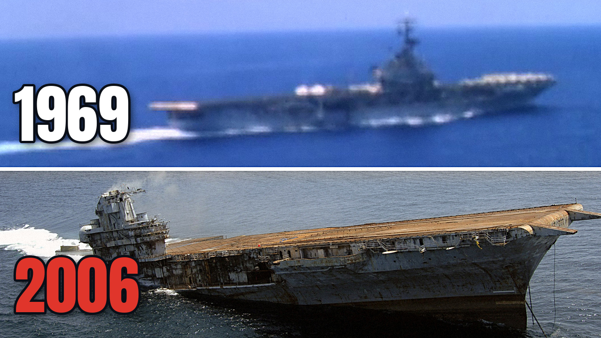
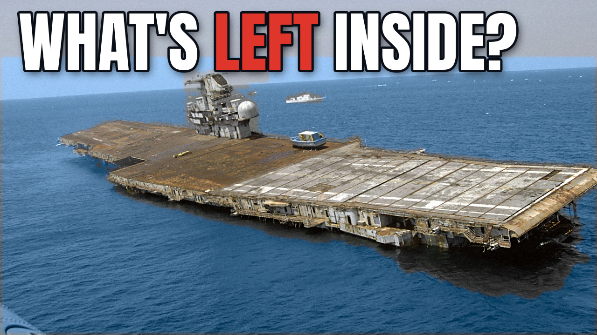

Video file: Oriskany_Nobody_Wanted_This_Aircraft_Carrier_FINAL_v8_1080p.mp4 (14:10, 1080p) · Publish after the SS United States lines are updated (from 13 Nov 2026)
1. Title
Nobody Wanted This Aircraft Carrier, So They Sank It
vidIQ score 92. Test & Compare alternates: “Why the Navy Sank Its Own Aircraft Carrier” (88) · “What the Navy Left Inside the Carrier It Sank” (88).
2. Thumbnails

F1, upload with this one v3_F1_37_minutes.jpg

F2, Test & Compare v3_F2_1969_2006.jpg

F3, Test & Compare v3_F3_whats_left_inside.jpg
Judge the Test & Compare winner on day 7–14, not day 1.
3. Upload settings
Setting
Value
Altered or synthetic content
YES (AI narration; drawn ship graphics and sinking animation)
Made for kids
No
Category
Education
Language / caption language
English / English
License
Standard YouTube License
Chapters
Automatic from the timestamps in the description (keep “Allow automatic chapters” on)
End screen
The last 18 s are an end-screen map: add a “subscribe” element and one “best for viewer” video
Comments
On. Post and pin the comment in section 6 right after publishing
4. Description (copy everything in the box)
In May 2006 the US Navy sank one of its own aircraft carriers off Pensacola, Florida, on purpose. Nobody had wanted the USS Oriskany: not as a museum, not as scrap. So why spend an estimated twenty million dollars (2006 press figure) to put her on the bottom of the Gulf of Mexico? This is the story of how she ended up there, what the Navy left inside her, and what it cost.
Chapters
0:00 Sunk on Purpose
0:48 Nobody Wanted Her
2:55 The Mighty O
5:53 The Bargain
7:55 Thirty-Seven Minutes
9:15 The Fish Test
11:13 The Real Reason
Was the bottom of the Gulf the best way to remember the Mighty O, or just the cheapest way to let her go? Tell us in the comments.
Credits
Archive film and photos: US Navy / US National Archives (NARA); United News / US National Archives. All public domain (US federal government works).
Clips marked ILLUSTRATIVE on screen are generic US Government footage (US Navy / DVIDS, NOAA Fisheries, NASA Goddard Space Flight Center Scientific Visualization Studio), public domain, not the Oriskany.
Maps: terrain and bathymetry from Mapzen / AWS Terrain Tiles (open data); US state and county boundaries from the US Census Bureau (public domain). Tow routes, the Yankee Station position, the 1952 air-fight position and the direction of the rubble reef are illustrative or approximate.
Ship drawings, sinking animation and graphics: made for this channel.
Narration: AI voice (Kokoro TTS).
Sound effects: Epidemic Sound.
Music by Chris Zabriskie, from the album Music from Neptune Flux, licensed under Creative Commons Attribution 4.0:
"Stories About the World That Once Was"
"Your Mother's Daughter"
"I Should Have Been More Human"
Sources: US Navy and NAVSEA reports, the US Government Accountability Office, the US EPA, the Florida Fish and Wildlife Conservation Commission, the Naval History and Heritage Command, and press reports from 2006. Full source list on request.
#USSOriskany #AircraftCarrier #NavalHistory
5. Tags (paste into the Tags box; about 450 of YouTube's 500-character limit)
USS Oriskany, Oriskany, Oriskany sinking, aircraft carrier sunk, aircraft carrier reef, Great Carrier Reef, artificial reef, Navy sank aircraft carrier, ship sunk on purpose, scuttled aircraft carrier, Essex class carrier, Mighty O, CV-34, Pensacola reef, Gulf of Mexico wreck, shipwreck documentary, naval history, US Navy history, Korean War carrier, Vietnam War carrier, ship scrapping, decommissioned warship
6. First comment (post it, then pin it)
She served through Korea and Vietnam, waited 30 years for someone to want her, and in the end the Navy sank her on purpose. 🌊
If it had been your call in 2006, what would you have done with the Oriskany?
🏛️ Museum
🔧 Scrap her
🐟 Sink her as a reef
Tell us below. And if you dived her or served aboard her, we'd love to hear your story.
Spotted a mistake? Reply here with a source and we'll pin a correction.
7. Before you press Publish
☐
Watched v8 once (Archive voice); names sound right (Oriskany, MiG, Okaloosa, porgies, Essex class, towed at 7:18)
☐
“Altered or synthetic content” = Yes
☐
Thumbnail F1 uploaded; F2 + F3 added in Test & Compare
☐
Description pasted; chapters show in the preview
☐
Tags pasted
☐
SS United States lines updated to what happened on 12 Nov; first comment posted and pinned